Atomfysikk
Du skal ha kompetanse om
- utviklingen av ulike atommodeller
- lys/fotoner
- hvordan Bohrs atommodell forklarer emisjons- og absorpsjonsspektre
Utviklingen av atommodeller
Demokrit (ca. 400 fvt.) regnes som den første til å komme med idéen om atomer. Han mente alt er sammensatt av små, udelelige enheter, som han kalte atomer (på gresk: "άτομο", som betyr udelelig).
Ifølge Demokrit var atomer elementærpartikler, men det har senere vist seg at de ikke er det.
Demokrit sin modell var filosofisk, ikke vitenskapelig. De vitenskapelige atommodellene oppsto først på 1700-tallet. Utviklingen av disse modellene kan i korte trekk oppsummeres slik:
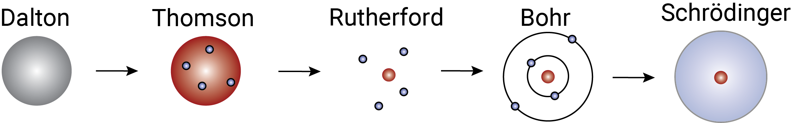
John Dalton (1766–1844) regnes som opphavsmannen til den første vitenskapelige atommodellen. Han beskrev atomene som harde, små og udelelige kuler. Han mente alle stoffer er bygd opp av disse kulene, og at ulike stoffer er bygd opp av ulike kuler (atomer) med ulike egenskaper og ulike masser. Daltons modell ligner ved første øyekast på Demokrits idé, men i motsetning til Demokrit bygde Dalton modellen sin på eksperimenter og observasjoner. Dalton observerte blant annet at hydrogen og oksygen reagerer i faste masseforhold når de danner vann, noe som støtter idéen om at kjemiske reaksjoner handler om at små kuler (atomer) reorganiserer seg.
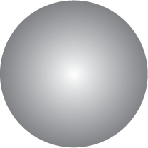
J.J. Thomson (1856–1940) regnes som oppdageren av elektronet. Han oppdaget dem ved å plassere ulike stoffer i et vakuumkammer og sette på en sterk elektrisk spenning. Den sterke spenningen dro løs små negativt ladde partikler fra atomene. Siden de samme partiklene dukket opp uansett hvilket stoff han plasserte i vakuumkammeret, forsto han at alle atomer må inneholde slike partikler – elektroner.
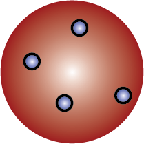
Atommodellen hans blir ofte kalt «rosinbollemodellen»: Han tenkte på atomet omtrent som en positiv bolledeig med negative rosiner (elektroner). Som en liten fun fact kan det nevnes at norske Kristian Birkeland egentlig oppdaget elektronene året før Thomson; For å simulere nordlys lagde Birkeland et vakuumkammer der han, på lignende måte som Thomson, brukte sterk elektrisk spenning til å skyte elektriske partikler (elektroner) gjennom et magnetfelt. Likevel regnes Thomson som oppdageren av elektronet, siden han fant ut hva elektonet er, mens Birkeland beskrev mekanismen bak nordlys.Ernest Rutherford (1871–1937) modifiserte modellene til Dalton og Thomson. Han sendte \(\alpha\)-partikler mot en tynn gullfolie og forventet at partiklene skulle bli litt bremset opp når de passerte gjennom gullatomene. MEN (!), til sin og andre sin overraskelse, observerte han i stedet at de fleste partiklene gikk uhindret gjennom, mens noen ble kraftig avbøyd.
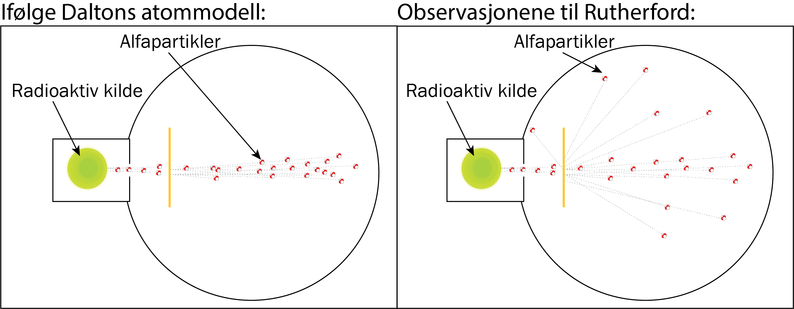
Dette viser at gullatomene i folien består av en liten, kompakt kjerne, med masse tomrom rundt seg; Enten bommer \(\alpha\)-partiklene og går uhindret gjennom, eller så treffer de den lille, harde atomkjernen og blir skarpt avbøyd.
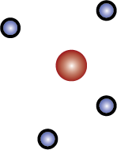
Niels Bohr (1885–1962) innførte ideen om at elektroner går i bestemte baner med bestemte energier. I modellen hans kan elektronene hoppe mellom banene ved å ta opp eller sende ut energi, i form av lyspartikler (fotoner). Denne modellen forklarer absorpsjons- og emisjonsspekter fra gasser (som blir forklart lenger ned).
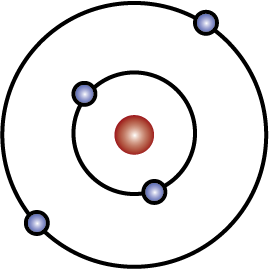
Erwin Schrödinger (1887–1961) utviklet en kvantemekanisk modell av atomet, hvor elektroner beskrives som diffuse "skyer" rundt atomkjernen. I denne modellen kan man ikke vite nøyaktig hvor elektronene er, bare hvor det er størst sannsynlighet for å finne dem; "Elektronskyene" beskriver en sannsynlighetsfordeling for hvor vi kan finne elektronene.
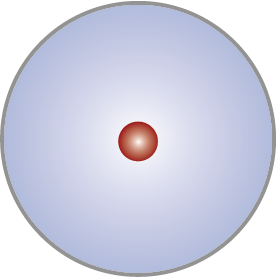
Shrödinger-modellen er en riktigere beskrivelse av virkeligheten enn Bohr sin modell, men i mange sammenhenger later vi som det er Bohr sin modell som er riktig, siden Bohr sin modell er mye enklere, og den er riktig nok i mange sammenhenger.
Utover 1900-tallet fant vi ut mer og mer om hvordan atomene er bygd opp. Blant annet vet vi nå at atomkjernen består av positivt ladde protoner og nøytralt ladde nøytroner.
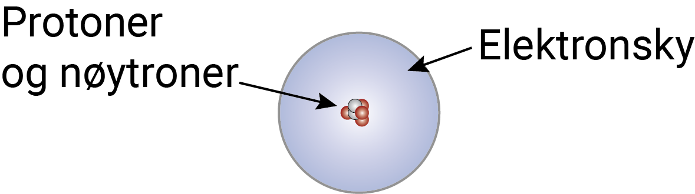
Protonene og nøytronene består av tre kvarker. Protonet er bygd opp av to u-kvarker og én d-kvark, mens nøytronet er bygd opp av én u-kvark og to d-kvarker.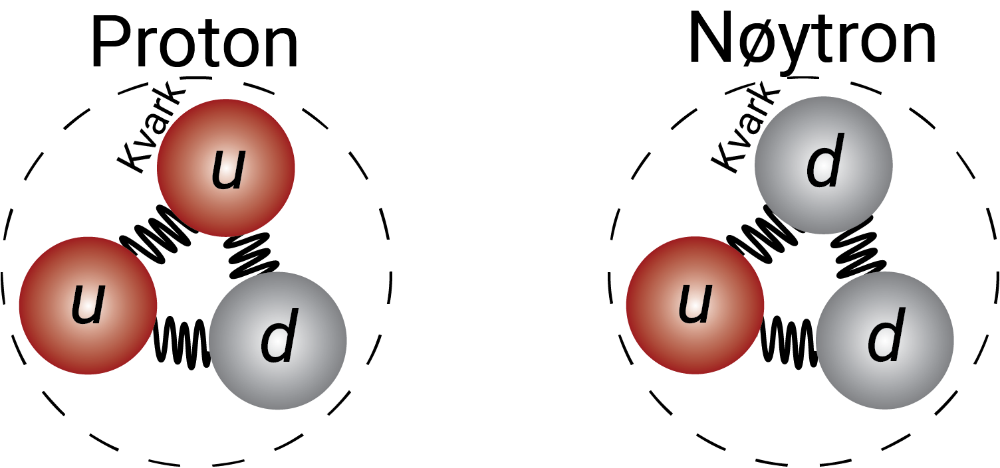
u-kvarkene har elektrisk ladning \(+2/3\) elementærladning og d-kvarkene \(-1/3\) elementærladning, men all elektrisk ladning i naturen er likevel kvantisert med elementærladninger; Det finnes nemlig ikke frie kvarker.
Kraften som holder kvarkene sammen kalles den sterke kjernekraften. Det er også denne kraften som holder protoner og nøytroner sammen med hverandre i en atomkjerne. Det virker elektrisk frastøtende krefter mellom ladninger med samme fortegn på ladningen, men på kort avstand er den sterke kjernekraften sterkere enn de elektriske kreftene, slik at kvarker holder seg sammen, og slik at protoner og nøytroner kan holde sammen og lager ulike atomkjerner.
Antall protoner i kjernen av et atom avgjør hvilket grunnstott atomet er, mens antall nøytroner i kjernen kan variere selv om det er snakk om samme grunnstoff. Samme grunnstoff med ulikt antall nøytroner kaller vi isotoper.
\({}^{14}_6\text{C}\) er en skrivemåte for at et karbonatom (C) har 6 protoner og 14 kjernepartikler (6 protoner + 8 nøytroner).
I kjernefysiske reaksjoner kan atomkjerner slå seg sammen eller dele seg ved hjelp av den sterke kjernekraften.
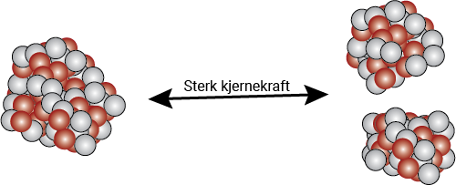
Det er også mulig at kvarker forvandles til andre kvarker, ved hjelp av en kraft som kalles svak kjernekraft.
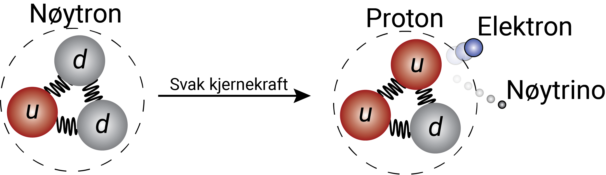
I alle kjernefysiske reaksjoner er den elektriske ladningen bevart, så i reaksjonen over dannes det et elektron, slik at den totale ladningen er lik før og etter reaksjonen. Det dannes også en liten, litt mystisk partikkel, som heter nøytrino.
Bohrs atommodell og fotoner
Bohrs atommodell gjelder egentlig bare for hydrogenatomet, men andre atomer har lignende egenskaper. Vi kan derfor ha i bakhodet at det vi beskriver her, mer eller mindre også gjelder andre atomer.
I Bohrs atommodell tenker vi oss at elektronene går i bane rundt atomkjernen, omtrent slik planetene går i bane rundt sola. Banene er kvantiserte, noe som betyr at elektronene bare kan bevege seg i bestemte baner med bestemte energier.
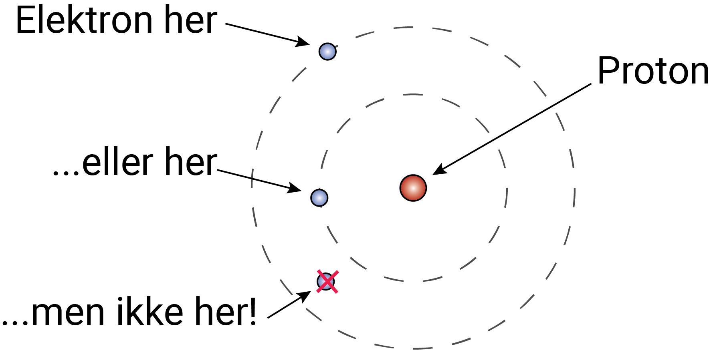
For å gå opp i energinivå (eksitere) kan elektronet absorbere en lyspartikkel. Når elektronet går til et lavere energinivå (deeksiterer), sendes det ut en lyspartikkel.
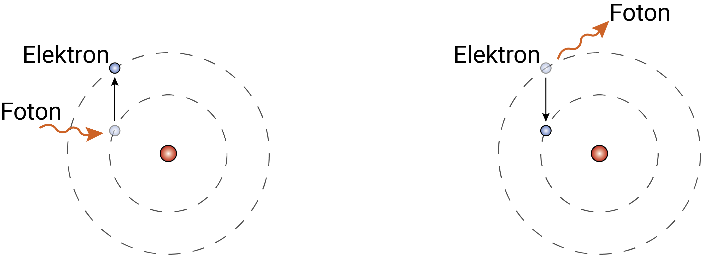
Fotoner: Lyspartikler kalles fotoner, og kan betraktes som små "bølgepakker":
Sammenhengen mellom energien \(E\), bølgelengden \(\lambda\) og frekvensen \(f\) til et foton er
\[ E = \frac{hc}{\lambda} = hf \]hvor \(h = 6\text{,}63 \cdot 10^{-34}\) Js (Planck's konstant) og \(c = 3\text{,}00 \cdot 10^8\) m/s (lysfarten i vakuum).
Sammenhengen mellom frekvensen, bølgelengden og hva vi ser er gitt av bildet nedenfor:

Synlig lys har bølgelengde mellom ca. 380 nm og ca. 750 nm. Lys med kortere bølgelengde har for mye energi til at øynene vår oppfatter det, og lys med lengre bølgelengde har for lite energi til at øynene våre oppfatter det.
Bohrs atommmodell sier at energien i nivå \(n\) er gitt ved
\[ E_n = -\frac{B}{n^2} \]hvor \(B = 2\text{,}18 \cdot 10^{-18}\) J er en konstant. Det er vanlig å fremstille energinivåen skjematisk slik:
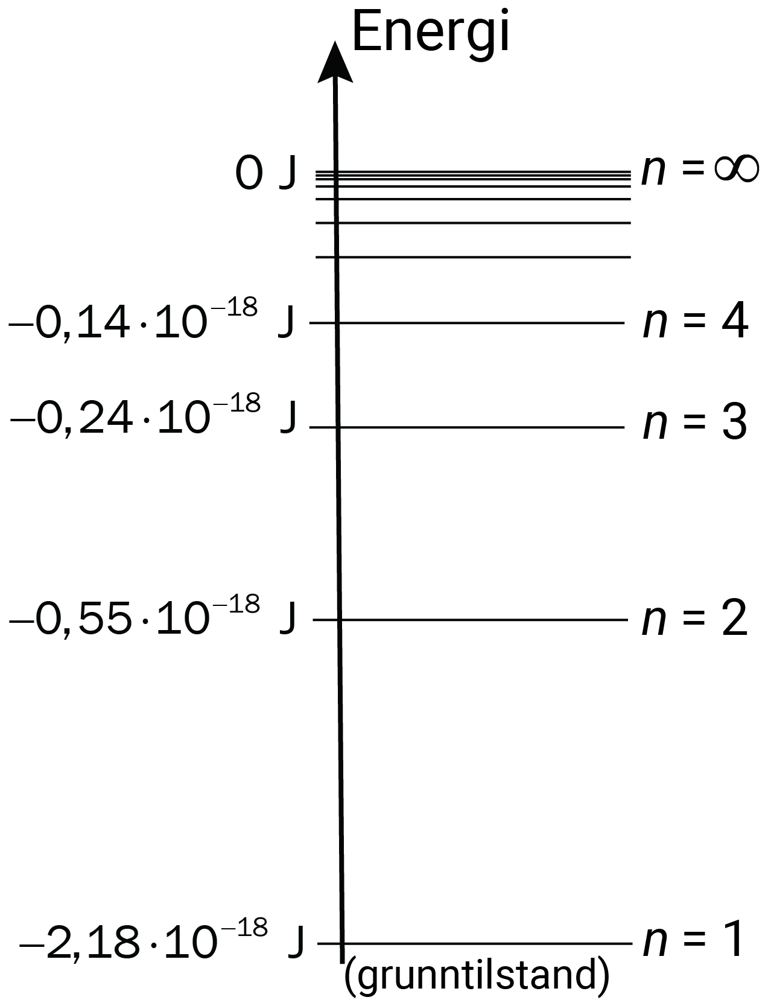
Eksempel
Et elektron absorberer et foton, og går fra nivå 1 til nivå 3 i et hydrogenatom.
Hvor mye energi har fotonet som blir absorbert?
Eksempel
Et elektron er i grunntilstanden i et hydrogenatom.
Hvor mye energi må vi tilføre elektronet for at atomet skal ioniseres?
Absorbsjons- og emmisjonsspekter: Når hvitt lys sendes gjennom en hydrogengass oppstår et absorpsjonsspekter og et emmisjonsspekter:

Hvitt lys inneholder fotoner med alle regnbuens farger, hvor fargene er bestemt av fotonenes energi. Så når et foton blir absorbert, blir denne fargen litt svakere i lyset som går rett fram gjennom gassen; Dette gir absorpsjonsspekteret. Fotonene som absorberes sendes ut igjen i en tilfeldig retning, noe som gir emmisjonsspekteret.
Vi kan også få emisjonsspekteret ved å varme opp gassen; Den termiske energien "rister" atomene slik at elektonene kan "hoppe" (eksitere) opp, og når de "faller" (deeksiterer) ned igjen, sendes det ut et foton med fargen/energien som svarer til energidifferansen mellom nivåene.
Ved å se på fargene i absorbsjons- eller emmisjonsspekteret, kan vi altså måle energinivåene i hydrogenatomet.
Eksempel
Et elektron deeksiterer fra nivå 2 til nivå 1 i et hydrogenatom.
Er lyset som sendes ut synlig?
Dette er kortere enn synlig lys; Lyset har dermed for mye energi til at vi kan se det.
Når elektroner derimot deeksiterer ned til nivå 2 fra et høyere nivå, sendes det ut synlig lys. Fargene vi får fra deeksitering ned til nivå 2 kalles Balmer-serien.
Eksempel
Et elektron deeksiter ned til nivå 2.
Vis at lyset er synlig uansett hvilket nivå det "faller ned" fra.
Hvis det faller fra nivå 3:
\[ E = \frac{B}{2^2} - \frac{B}{3^2} = 3\text{,}03 \cdot 10^{-19} \text{ J} \;\; \rightarrow \;\; \lambda = \frac{6\text{,}63 \cdot 10^{-34} \cdot 3\text{,}00 \cdot 10^8}{3\text{,}03 \cdot 10^{-19}} = 657 \text{ nm} \]Hvis det faller fra et veldig høyt nivå:
\[ E = \frac{B}{2^2} - \frac{B}{\infty^2} = 5\text{,}45 \cdot 10^{-19} \text{ J} \;\; \rightarrow \;\; \lambda = \frac{6\text{,}63 \cdot 10^{-34} \cdot 3\text{,}00 \cdot 10^8}{5\text{,}45 \cdot 10^{-19}} = 365 \text{ nm} \] Dermed må bølgelengden være mellom \( 657 \text{ nm}\) og \(365 \text{ nm} \), som er innenfor det synlige spekteret.Formelen \(E_n = -\frac{B}{n^2}\) gjeder bare hydrogenatomet, men alle atomer absorberer bestemte farger.
Vi kan dermed se på emmisjons- eller absorbsjonsspekteret til en gass for å bestemme hvilke stoffer gassen består av. Dette er en veldig vanlig analysemetode, og ble brukt allerede på 1800-tallet for å bestemme hvilke atomer det er på sola og andre stjerner.